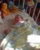
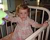
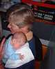

29th September 2001
Poppy's thrush is clearing up very quickly now and she is finding it a lot easier to feed. She has also caught a cold and has a nasty cough. Today we decided that Poppy would be better coming off oxygen before she comes home so her oxygen level has been gradually decreased and this evening she is back to where she was at the beginning of the week. We have realised that she will probably come off the oxygen more quickly whilst she is in the unit and it will be easier for us and her to not have it at home.


28th September 2001
Poppy has got thrush in her mouth which is making it difficult for her to feed. She is being given medicine to clear it up, but at the moment she is finding bottle feeding easier than breast feeding.
27th September 2001
Today is Poppy's due date! She spent it uneventfully slumbering in her cot.
26th September 2001
Today the doctors decided that Poppy would stay on oxygen until she comes home. This is partly so that she can come home more quickly, which is what we want, and also because of the time of year - because she has had lung problems we have to be careful that she won't catch an infection.
25th September 2001
Poppy went back on oxygen at around 11 o'clock this morning - she was off for 27 hours, which is very good. She has had a good day today and she will be tried on no oxygen again tomorrow.
24th September 2001
23rd September 2001
Poppy has been off oxygen for over twelve hours so far today. This evening Mike removed her lo-flo tubes from her nose so now she has no tubes at all. She drank 140ml of milk as well and coped extremely well. We will have to see how she copes overnight.
Poppy was very sleepy this morning and very hungry this afternoon. Her milk is being increased to 100ml when she is bottle fed from tommorrow as she seems to be having a growth spurt. This evening she was off oxygen for about an hour.
